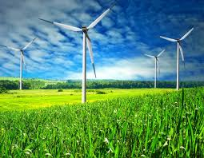

Oque é?
É a geração de energia potencial ou eletrica atraves do vento, utilizando um moinho ou um aerogeradores
É a geração de energia potencial ou eletrica atraves do vento, utilizando um moinho ou um aerogeradores
Uma das vantgens seria que é totalmente renovavel e li pa para o meio ambiente, mas totalmente depedente do clime do local
